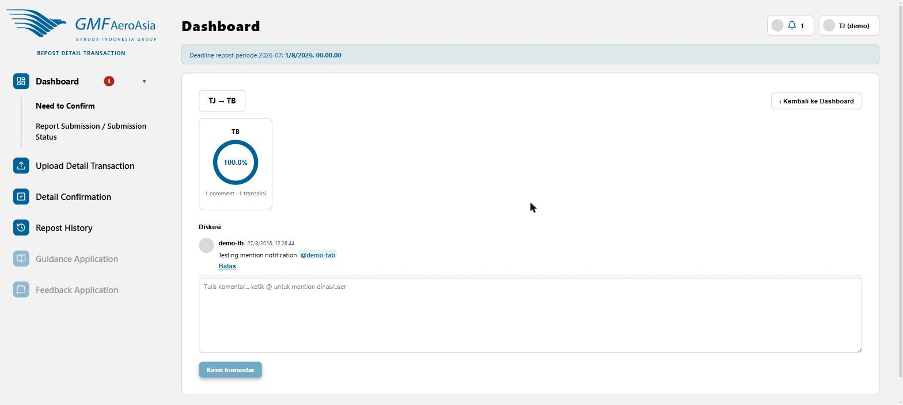

Progress ring + thread diskusi per pasangan
rdt/dashboard/detail/:dinasPengaju/:dinasTarget

- Diakses lewat tombol "Lihat & balas di Dashboard-Detailing" di halaman Confirm, atau klik kartu progress di Dashboard.
- Ring progress menunjukkan persentase transaksi yang sudah selesai untuk pasangan dinas ini.
- Kotak Diskusi di bawahnya adalah percakapan bersama — semua komentar terkait pasangan dinas ini (dari confirm, decline, reassign, dsb.) muncul di sini secara kronologis.
- Ketik @ di kotak komentar untuk mention dinas atau user tertentu — orang yang di-mention akan menerima notifikasi.
- Klik Balas di bawah komentar tertentu untuk membalas langsung ke komentar itu (bukan komentar baru terpisah).